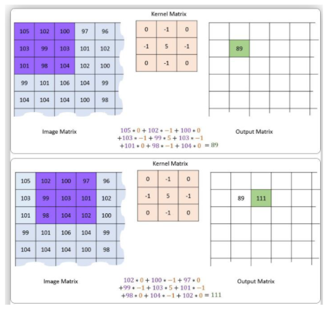

Operations with Images
In this project, I wrote a Python program to make some calculations on 3D pixels of some images.
I used the ppm image format for reading image files. I declared two functions:
read_ppm_file(f) which will enable you to read .ppm files to a 3d list.img_printer(img) which is a function that prints 3d lists in a readable manner.filename and operation.
When operation input is 1, min-max normalization will be applied.
In this case you will require two additional inputs: minimum and maximum.
Each input will be given in separate lines. These two values should be integers.
The formula for min-max normalization is as follows:
When operation input is 2, z-score normalization will be applied .
This case does not require additional inputs. You will find channelwise means and standard deviations, and output the normalized image.
The required formulas are provided below:
When operation input is 3, the image will be converted to black and white. This case does not require additional inputs.
This can easily be done by taking the average of each pixel's channel values, and assigning to each channel the average value.
For example, if a pixel's channel values are [12, 13, 14], I did (12 + 13 + 14) / 3 = 13 and assigned to that pixel's channels [13, 13, 13] and that's it.
When operation input is 4, convolution is applied to the image.
You will be provided two additional inputs: one is the filename of a filter which will be located under the src folder
and the other is a stride parameter which denotes how many steps the filter will move after each summation is complete.
Important: If the weighted sum exceeds the image maximum color value or becomes less than 0, value is clipped such that it is always between 0 and maximum color value.
Each input will be given in separate lines. An example of the operation is provided below where stride is 1:

When operation input is 5, convolution is again applied to the image, but this time I
padded zeros to the edges of your input image so that your output image has the same dimensions as your input image.
You will once more be provided two additional inputs: one is the filename of a filter which will be located under the src folder
and the other is a stride parameter which denotes how many steps the filter will move after each summation is complete.
Important: If the weighted sum exceeds the image maximum color value or becomes less than 0, value is clipped such that it is always between 0 and maximum color value.
Each input will be given in separate lines.
When operation input is 6, color quantization is applied to the image.
You will get a range input which you will use to compare whether two pixels are similar enough to be grouped together or not. Input will be given in a separate line.
The rule for this quantization is simple, if all the channel values between two pixels differ by less than the range, then they will be made equal.
When operation input is 7, color quantization is again applied to the image but this time it is a 3d quantization.
You will provide a range input which I used to compare whether two channel values are similar enough to be grouped together or not.
The rule for this quantization is if the channel values between two neighbours differ by less than the range, then they will be made equal.
This time, different channels of the same pixel are considered as neighbors as well as the same channel on different pixels.